01
מה Claude עושה בתוך גיליון Excel, ובמה זה שונה מהדבקת טבלה לשיחה
נניח שיש לכם גיליון Excel של מעקב מועדים בתיק מסוים, או טבלת שעות שאתם מדווחים ללקוח. אם השתמשתם עד היום ב-Claude דרך הדפדפן, כנראה עבדתם ככה: סימנתם את הטבלה, העתקתם אותה, הדבקתם לתוך השיחה, שאלתם שאלה וקיבלתם תשובה שהעתקתם בחזרה בעצמכם. זה עובד, אבל זה עובד על העתק. Claude ראה רק את מה שהדבקתם, לא את הקובץ.
הכלי שנתקין במדריך הזה עובד אחרת. הוא נפתח כסרגל צר בצד המסך, בתוך ה-Excel שלכם, לצד הגיליון עצמו. משם הוא יכול לעשות שלושה דברים שהשיחה בדפדפן לא יכולה:
- לקרוא את הקובץ כולו, ולא רק את מה שסימנתם. אם יש לכם קובץ אחד עם גיליון נפרד לכל תיק, הוא רואה את כולם.
- להצביע על תא מסוים בתשובה שלו. כשהוא מסביר חישוב, ההפניה לתא היא לחיצה, וה-Excel קופץ לאותו תא בעצמו.
- לשנות בקובץ בעצמו, אם ביקשתם. הוא כותב, מוחק ומתקן בגיליון האמיתי, במקום להחזיר לכם טקסט להעתקה.
שלוש היכולות האלה, ובמיוחד השלישית, הן גם היתרון וגם מה שמחייב זהירות. בהמשך המדריך נראה בדיוק איך רואים כל שינוי שהוא עשה, איך חוזרים אחורה ואיך מוודאים שלא סמכתם על משהו לא נכון.
שני מושגים שיחזרו לאורך כל המדריך
כדאי להפריד ביניהם פעם אחת, כי בהמשך נשתמש בשניהם.
קובץ Excel הוא מה שאתם שומרים במחשב ושולחים במייל. גיליון הוא לשונית אחת בתוך הקובץ, מאותן לשוניות שמופיעות בתחתית המסך. קובץ אחד יכול להחזיק עשרים גיליונות, למשל גיליון נפרד לכל תיק.
ההבחנה הזאת חשובה לשני דברים בהמשך: Claude קורא את כל הלשוניות שבקובץ ולא רק את זו שפתוחה מולכם, וכשמבקשים ממנו משהו כדאי לציין באיזו לשונית מדובר, כדי שלא יעבוד על הלשונית הלא נכונה.
02
איך נראית עבודה שלמה עם Claude בתוך גיליון Excel, מההתחלה עד הסוף
לפני שנצלול לפרטים, כדאי לראות את כל המסלול בבת אחת. ככה תדעו לאן אנחנו הולכים, ולא תרגישו אבודים באמצע. עבודה אחת שלמה מורכבת מארבעה שלבים, וזה נכון גם לבקשה הפשוטה ביותר וגם למורכבת ביותר.
- אתם מבקשים. פותחים את הסרגל בצד וכותבים בעברית מה אתם רוצים. למשל: תסביר לי איך יצא הסכום בעמודת שכר הטרחה.
- הוא עונה או מציע. אם ביקשתם הסבר, הוא עונה ומצביע על התאים הרלוונטיים. אם ביקשתם שינוי, הוא מבצע אותו ומסמן בצבע כל תא שנגע בו.
- אתם בודקים. עוברים על מה שהשתנה, לוחצים על ההפניות לתאים ומוודאים שזה מה שהתכוונתם. זה השלב שאף פעם לא מדלגים עליו.
- אתם מאשרים או חוזרים אחורה. אם זה נכון, שומרים וממשיכים. אם לא, מבטלים ומנסחים את הבקשה מחדש.
שימו לב לדבר אחד בשלב 2: כשהוא משנה משהו בקובץ, זה קורה מיד ולא ממתין לאישור שלכם. אין כאן מסך של "האם אתה בטוח" לפני כל שינוי. לכן שלב 3 הוא שלב חובה, ולכן גם בפרק 5 נקבע מראש על אילו קבצים בכלל פותחים את הכלי.
03
במה Claude טוב ב-Excel, ומה הוא לא עושה
לפני שמתקינים כלי חדש, כדאי לדעת מה הוא באמת עושה טוב, ובאילו מקומות לא כדאי לסמוך עליו.
מה הוא עושה טוב
- מסביר גיליון Excel שלא אתם בנתם. קיבלתם גיליון Excel עם חישוב שצורף לתביעת נזיקין, או קובץ שעובד קודם במשרד בנה, ולא ברור לכם מאיפה הגיע מספר מסוים. אפשר לשאול, והוא מצביע על התאים שהובילו לתוצאה.
- משנה נתון בלי לשבור נוסחאות. בלוח תשלומים של עסקת מכר, אם משנים סכום או מועד, כל מה שתלוי בו ממשיך לעבוד.
- מוצא ומתקן שגיאות. תאים שמציגים הודעת שגיאה, סכום שלא מסתדר, או חישוב שמפנה לעצמו במעגל.
- בונה גיליון Excel חדש מאפס, או ממלא תבנית קיימת. למשל רשימת נכסים בהליך משפחה, טבלת שעות של עובד בתיק דיני עבודה, או מפתח נספחים לתיק.
- מבצע פעולות Excel רגילות בעצמו. למיין ולסנן טבלה, לצבוע באדום כל שורה שעברה מועד, להוסיף רשימה נפתחת בעמודת סטטוס, לערוך טבלאות ציר וגרפים, ולהכין את הגיליון להדפסה. אלה פעולות שאפשר לבקש במילים, בלי לדעת איפה הן נמצאות בתפריטים.
- מחלץ טבלה מ-PDF לתוך גיליון. תדפיס בנק, חשבונית או תחשיב שהגיעו כ-PDF יכולים להפוך לטבלה שאפשר לעבוד איתה. על זה יש רמה שלמה במדריך 2.
מה הוא לא עושה
- הוא לא מבקש אישור לפני כל שינוי. כשביקשתם שינוי, הוא מבצע. הוא כן מסמן מה השתנה, ומזהיר לפני שהוא דורס נתונים קיימים.
- הוא לא תומך במאקרו ולא ב-VBA. אלה כלי אוטומציה מתקדמים של Excel, והוא לא עובד איתם. גם טבלאות נתונים אינן נתמכות.
- הוא לא מכיר קבצים אחרים. בשיחה חדשה הוא רואה רק את הקובץ שפתוח מולכם, ולא יודע שום דבר על קבצים אחרים במשרד. מה שכן נשמר בין קבצים הוא היסטוריית השיחות בסרגל, ומה שקבעתם בהוראות הקבועות שבפרק 12.
- הוא לא מתריע מעצמו כשהוא לא בטוח. אלא אם ביקשתם ממנו במפורש לסמן מה שלא היה ברור, והוא כן יודע לעשות את זה כשמבקשים. הבדיקה נשארת באחריותכם, ובפרק 10 נראה איך עושים אותה בפועל.
- הוא לא פותח וסוגר קבצים בעצמו. התיעוד הרשמי מציין שהוא אינו יכול ליצור, לפתוח, לסגור או להחליף קבצים מתוך התוסף. בכל מקרה, הקובץ שאתם רוצים שיעבוד עליו צריך להיות פתוח מולכם, כי הוא רואה רק אותו.
04
אילו גרסאות Excel נדרשות, ואיזה מנוי
זה הפרק שכדאי לקרוא לפני שממשיכים, כי אם הגרסה שלכם לא נתמכת, אין טעם להתחיל בהתקנה. הנתונים כאן מתוך התיעוד הרשמי של Anthropic.
איזה מנוי נדרש
התיעוד הרשמי קובע שנדרש מנוי Claude בתשלום, וכי כל המנויים בתשלום מאפשרים את התוסף. כלומר מבחינת המוצר, גם מנוי אישי בתשלום עובד. השאלה איזה מנוי מתאים למשרד עורכי דין היא שאלה אחרת, ועליה עמדת Legal Mind שבסוף הפרק.
איפה זה עובד
- Excel בדפדפן.
- Excel על Windows, אבל רק מתוך מנוי Microsoft 365.
- Excel על Mac, מגרסה 16.46 ומעלה.
- Excel על iPad, מגרסה 2.51 ומעלה.
איפה זה לא עובד
- Excel 2016 ו-Excel 2019 שנרכשו ברישיון חד פעמי, ולא כמנוי. זו הנקודה שמפילה הרבה משרדים, כי מדובר ב-Excel שנראה זהה לגמרי, אבל התוסף לא ייטען בו. ואם תסתכלו בעמוד התוסף בחנות של Microsoft ותראו שם כתוב "Excel 2016 ואילך", אל תתבלבלו: זה השדה הכללי של החנות, והתיעוד של Anthropic מפורט יותר וקובע במפורש שרישיון חד פעמי אינו נתמך.
- Excel על Android.
- גרסאות Microsoft 365 ישנות מדי, גם אם הן מנוי.
איך יודעים מה יש לכם
שלושה צעדים, ואנחנו עוברים אותם ביחד:
- פותחים Excel, ולוחצים על File בפינה השמאלית העליונה, בקצה הסרגל.
- נפתח מסך על כל החלון. בתפריט שברצועה השמאלית, למטה, לוחצים על Account.
- מסתכלים על השורה שמופיעה תחת הכותרת של פרטי המוצר. אם כתוב שם Microsoft 365, אתם במנוי וזה תקין. אם כתוב Office 2016 או Office 2019 בלי המילה 365, זה רישיון חד פעמי והתוסף לא יעבוד.
הסרגל העליון, והכפתור File בקצה
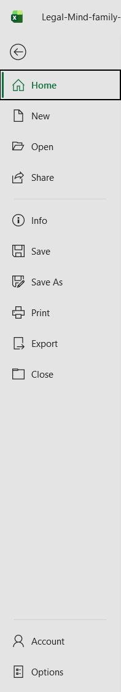
הרצועה שנפתחת, ו-Account בתחתיתה
מסך Account, והשורה שמראה איזה מנוי Office יש לכם
מכסות שימוש, ומה קורה בשיחה ארוכה
השימוש בתוסף נספר במכסה של חשבון Claude שלכם, בדיוק כמו שימוש רגיל. אין לו מכסה נפרדת.
ודבר שני שכדאי להכיר מראש: שיחה ארוכה נדחסת אוטומטית לשיחה חדשה כשהיא מתקרבת לגבול. זו התנהגות מתועדת ולא תקלה, אבל המשמעות היא שפרטים מתחילת השיחה עלולים לא להיות זמינים לו בהמשכה.
בעבודה על תיק, אם אחרי שעה הוא שכח משהו שאמרתם בהתחלה, זו הסיבה. פשוט חוזרים ואומרים.
אילו סוגי קבצים נתמכים
קבצי .xlsx וקבצי .xlsm. אלה סוגי הקובץ הרגילים של Excel, ורוב הסיכויים שכל הקבצים במשרד שלכם הם כאלה.
05
על אילו קבצים מותר להפעיל את Claude
זה הפרק החשוב ביותר במדריך הזה, והוא מגיע לפני ההתקנה בכוונה. הסיבה פשוטה: אחרי שהתוסף מותקן, ההחלטה על איזה קובץ לפתוח אותו נעשית בשנייה, בלי לחשוב. לכן כדאי שהכלל יהיה ברור מראש.
הכלל
מפעילים את Claude רק על גיליונות Excel שמקורם אצלכם, או אצל מי שאתם סומכים עליו. לא על גיליונות שהגיעו ממקור חיצוני שאינכם מכירים.
למה, בשפה פשוטה
גיליון Excel יכול להכיל טקסט מוסתר. לא בכוונה זדונית בהכרח, אבל אפשר. אם מישהו הטמין בתוך תא, או בתוך הערה, או בגיליון נסתר, הוראה שמכוונת ל-Claude, יש סיכוי שהוא יתייחס אליה כאילו אתם כתבתם אותה. במקרה כזה הוא יכול, למשל, להוציא מידע מהקובץ למקום אחר, לשנות נתונים שלא ביקשתם לשנות, או לבצע פעולה מוחקת על כמה גיליונות.
ומה שחשוב להבין: זה סוג הנזק שבדיקה של התוצאה אחר כך לא מבטלת. אם מידע יצא, הוא יצא. לכן זו לא אזהרה מסוג "תבדקו את התוצר", אלא החלטה שמתקבלת לפני שפותחים את הקובץ.
יש רשת ביטחון אחת, וכדאי להכיר אותה
יש קבוצה של פונקציות Excel שיכולות למשוך מידע מבחוץ או להריץ פעולה במחשב. כשClaude מנסה להפעיל אחת מהן, מופיע חלון שמבקש את האישור שלכם לפני הביצוע. זה נכון, בין היתר, לפונקציות שמושכות מידע מהאינטרנט, לפונקציות שמייבאות נתונים ממקור חיצוני, ולפונקציות שניגשות לקבצים במחשב.
אם קיבלתם חלון אישור כזה ולא ביקשתם שום דבר שדורש מידע מבחוץ, זה סימן שכדאי לעצור. לא לאשר, לסגור את הקובץ, ולברר מאיפה הוא הגיע.
איך זה מתורגם לעבודה במשרד
| סוג הקובץ | מותר להפעיל? |
|---|---|
| גיליון Excel שאתם או עובד במשרד בניתם | כן |
| גיליון שהלקוח שלכם שלח, ואתם מכירים אותו | כן, בכפוף לפרק 6 |
| תבנית שהורדתם מהאינטרנט | לא |
| גיליון שצורף למייל מעורך הדין של הצד השני | לא |
| קובץ שספק או גורם חיצוני שלח | לא |
| גיליון משותף שהרבה גורמים עורכים | לא |
איך הקובץ הבעייתי נראה בתחומים שונים
הטבלה שלמעלה מנוסחת באופן כללי, אבל בפועל אף אחד לא חושב "הגיע אליי קובץ ממקור לא מהימן". חושבים על הקובץ המסוים שנחת במייל. אלה הדוגמאות האופייניות, לפי תחום:
- נדל"ן. לוח תשלומים או טבלת חישוב הצמדה שהיזם, הקבלן או עורך הדין שלהם שלחו.
- דיני עבודה. גיליון Excel של שכר או דוח נוכחות שהמעסיק העביר, או תלושים שהומרו לאקסל בידי גורם חיצוני.
- נזיקין. חישוב נזק או תחשיב אקטוארי שהגיע ממומחה או מחברת הביטוח.
- דיני משפחה. טבלת נכסים, ריכוז תנועות בנק או תחשיב איזון שהצד השני צירף.
- הוצאה לפועל וגבייה. פירוט חוב או ריכוז יתרות שהתקבל מהזוכה או מהחייב.
- מסחרי ותאגידים. מודל הערכת שווי או טבלת בעלויות שהגיעה מהצד השני בעסקה.
כל אלה הם קבצים שימושיים ולגיטימיים לחלוטין לעבודה. הם רק לא קבצים שפותחים עליהם את הכלי.
ומה עושים אם חייבים לעבוד על קובץ כזה
פותחים גיליון Excel חדש ונקי, מסמנים בקובץ המקורי רק את הנתונים שצריך, מדביקים אותם לגיליון החדש כטקסט בלבד, וסוגרים את הקובץ המקורי. עכשיו אתם עובדים על קובץ שאתם יצרתם, ולא על קובץ של מישהו אחר.
06
חיסיון, הסכמת לקוח ולאן המידע מגיע
הפרק הזה גם הוא לפני ההתקנה, כי הוא חומר להחלטה ולא הוראת הפעלה.
לאן המידע נוסע
כשאתם מבקשים משהו, תוכן הגיליון שנדרש לאותה בקשה נשלח לענן של Anthropic, שם הבקשה מעובדת, והתשובה חוזרת לסרגל. זה נכון גם כשהקובץ שמור אצלכם על המחשב, וגם כשלא העליתם אותו לשום מקום בעצמכם.
ומה בדיוק נשלח, לפי ההצהרה הרשמית
Anthropic מסרה ל-Microsoft, במסגרת אישור התוסף, פירוט של מה שנשמר. הרשימה כוללת את ההודעות שכתבתם, את היסטוריית השיחה, את תוכן התאים, טווחים שסימנתם, קבצים שהעליתם, וגם מטא-דאטה של הגיליון: שם הקובץ ושמות הלשוניות.
ולזה יש משמעות מעשית מאוד לעורך דין, שלא כולם חושבים עליה: קובץ שנקרא "כהן נגד אלפא, תחשיב נזק" מסגיר את שם הלקוח ואת מהות התיק עוד לפני שנשלחה שורה אחת של נתונים. אם אתם עובדים על חומר רגיש, שווה לשקול שם קובץ ושמות לשוניות ניטרליים.
איפה המידע נשמר גיאוגרפית
לפי אותה הצהרה, המידע נשמר בארצות הברית. לעורך דין בישראל זו נקודה שצריכה להיכנס לשיקול, במיוחד כשמדובר במידע אישי של לקוחות, והיא לא ייחודית לכלי הזה אלא נכונה להרבה שירותי ענן. עוד נמסר באותה הצהרה שהמידע אינו מועבר לצדדים שלישיים או לקבלני עיבוד נוספים.
מה נשמר, ולכמה זמן
לפי התיעוד הרשמי, ברירת המחדל היא שהקלט והפלט נמחקים תוך 30 יום, אלא אם מדיניות שמירת הנתונים של הארגון קובעת אחרת.
נקודה נוספת שכדאי להכיר: היסטוריית השיחות בסרגל נשמרת מקומית בדפדפן או במחשב שלכם, ולא בשרת. המשמעות המעשית היא שהיא לא עוברת בין מחשבים, ואם מנקים את נתוני הדפדפן היא נעלמת. בתוך Excel היא כן עוברת בין קבצים שונים.
מה שמנהל אבטחת מידע במשרד ישאל, והתשובות
אלה הפרטים שמופיעים בעמוד אישור התוסף של Microsoft, כפי שנמסרו על ידי Anthropic עצמה בפברואר 2026. שווה לדעת שזו הצהרת יצרן, ו-Microsoft מציינת במפורש שהיא אינה מאמתת אותה.
- יש תקן SOC 2 Type 2, מנובמבר 2025, וגם SOC 3.
- יש תקן ISO 27001.
- אין HIPAA, FedRAMP, PCI DSS ו-ISO 27017 או 27018.
- המידע אינו מועבר לצדדים שלישיים.
- מבוצעות בדיקות חדירה שנתיות וסריקות פגיעות רבעוניות.
למשרד שנדרש להציג מסמך אבטחת מידע ללקוח מוסדי, אלה הנתונים שהוא יבקש, וכדאי שיהיו בידיכם עוד לפני שהשאלה נשאלת.
אפשרות למשרדים עם תשתית טכנולוגית
יש דרך התקנה מתקדמת, שמיועדת לארגונים ולא ליחידים, שבה הבקשות מנותבות דרך תשתית ענן של הארגון עצמו במקום ישירות ל-Anthropic. במסלול הזה, לפי התיעוד, תוכן הבקשות והתשובות נשאר אצל ספק הענן שהארגון בחר. זו פעולה של מנהל מערכת ולא של עורך דין, אבל אם החיסיון הוא שיקול מכריע במשרד שלכם, שווה לדעת שהאפשרות הזאת קיימת ולהעלות אותה מול איש ה-IT.
נקודה שחשוב שמנהל המשרד ידע: אין יומן ביקורת ארגוני
התיעוד הרשמי מציין במפורש שבמנויים Free, Pro, Max ו-Team אין יכולת מעקב וביקורת על השימוש בתוסף ב-Excel, ושהוא אינו נכלל ביומני הביקורת של Enterprise ואינו מקושר להגדרות שמירת הנתונים המותאמות של הארגון.
המשמעות המעשית: אין דרך ארגונית לראות בדיעבד מי הפעיל את הכלי על איזה קובץ. התיעוד היחיד שקיים הוא זה שאתם עצמכם מפעילים בתוך הקובץ, גיליון היומן שמוסבר בפרק 8. במשרד שעובד על חומר של לקוחות, זו סיבה טובה להפעיל אותו כברירת מחדל ולא כתוספת.
מה שכדאי לסדר לפני שמעלים חומר של לקוח
- לוודא שאתם עובדים בחשבון של המשרד, ולא בחשבון אישי.
- לברר מול מי שאחראי במשרד מה מותר להזין ומה לא.
- לקבל את הסכמת הלקוח, כפי שהמשרד עושה זאת בכלים אחרים.
- להתחיל על גיליון Excel שאין בו פרטים מזהים, עד שאתם בטוחים בכלי.
שווה לשים לב שיש תחומים שבהם הגיליונות רגישים במיוחד. בדיני משפחה ובדיני עבודה, גיליון אחד יכול להכיל תנועות בנק, נתוני שכר או פרטים על בני משפחה, כלומר מידע אישי מהסוג הרגיש ביותר. שם הזהירות לפני שמעלים חומר צריכה להיות גדולה יותר, ולא פחות.
נקודה שכדאי לדעת: הוא לא בהכרח מוגבל לגיליון
אם חיברתם ל-Claude מערכות חיצוניות, למשל תיבת מייל או אחסון מסמכים, החיבורים האלה עובדים גם מתוך Excel. כלומר הוא יכול להביא לגיליון מידע שלא נמצא בו, וגם להפך.
מצד אחד זה שימושי. מצד שני זה מרחיב את מה שנגיש לו בזמן שאתם עובדים על קובץ של לקוח, ולכן כדאי לדעת אילו חיבורים פעילים אצלכם לפני שמתחילים. חיבורים שנבנו בהתאמה אישית, ולא חיבורים רשמיים, דורשים בדיקה נפרדת לפני שמפעילים אותם.
לפי התיעוד הרשמי, כדי לראות אילו חיבורים זמינים פותחים את הסרגל, לוחצים על כפתור הפלוס שמתחת לשורת הכתיבה ובוחרים Connectors. נושא החיבורים אינו נכנס לסדרה הזאת, כי הוא נוגע גם בהעברת מידע לצדדים שלישיים ומצריך דיון בפני עצמו.
ויש עוד הגדרה אחת שכדאי שמנהל המשרד יכיר
ל-Claude יש יכולת לעבוד בין יישומי Office שונים, כלומר להעביר הקשר בין Excel, Word ו-Outlook בלי שתעתיקו ביניהם בעצמכם. התיעוד הרשמי מנסח זאת כך: ההקשר עובר בין היישומים אוטומטית.
והנקודה החשובה למשרד: במנויי Team ו-Enterprise ההגדרה הזאת כבויה כברירת מחדל, ורק בעל הארגון יכול להפעיל אותה, תחת הגדרות הארגון בסעיף Office agents. במנויים אישיים בתשלום היא דווקא פעילה כברירת מחדל.
כלומר אם המשרד שלכם על Team, ברירת המחדל היא הזהירה יותר, וזה דבר טוב. אבל אם מישהו מפעיל את ההגדרה, המשמעות היא שעבודה על גיליון של לקוח יכולה למשוך הקשר גם מהמייל ומהמסמכים. זו החלטה שכדאי שתתקבל במשרד ביודעין, ולא תתגלה בדיעבד.
הוא עובד על כל הקבצים הפתוחים, ויש לזה מתג
במסכי הפתיחה של התוסף מופיע מסך שאומר את זה במפורש: Claude יכול לעבוד על כל המסמכים, חוברות העבודה והמצגות שפתוחים אצלכם, בבת אחת.
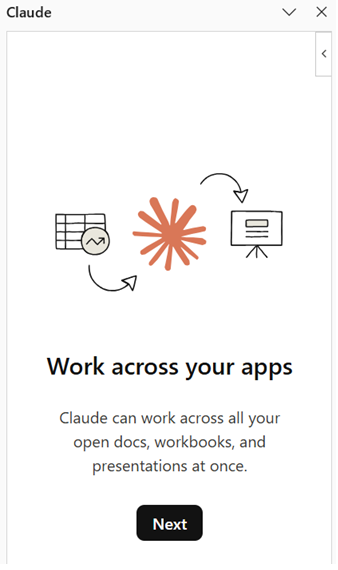
מסך הפתיחה שמסביר שהוא עובד על כל הקבצים הפתוחים
המשמעות המעשית ברורה: אם פתוח אצלכם במקביל חוזה של לקוח אחד וגיליון Excel של לקוח אחר, שניהם בהישג ידו באותו רגע.
וזו יכולת שאפשר לכבות. בהגדרות התוסף יש מתג בשם Let Claude work across files, והוא דלוק כברירת מחדל. מי שרוצה ש-Claude ייגע רק בקובץ שהוא עומד עליו, מכבה אותו.
ולכל הפחות, סגרו קבצים של תיקים אחרים לפני שאתם מתחילים לעבוד.
הוראות מוסתרות בתוך קבצים
לפני שהתוסף מתחיל לעבוד הוא מציג מסך אזהרה, וזה המסך היחיד בכל ההתקנה שדורש אישור מפורש ולא רק Next.
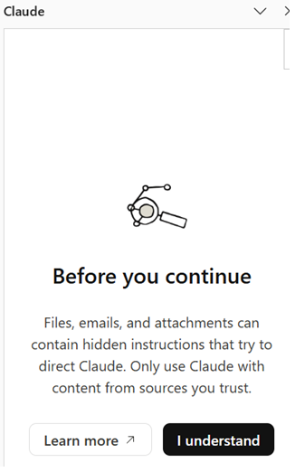
מסך האזהרה על הוראות מוסתרות, עם הכפתור I understand
זה מה שכתוב בו, בתרגום מדויק:
ובתיעוד הרשמי של Claude for Excel זה מנוסח חזק יותר:
ולמה זה נוגע לעורך דין יותר מלכל אחד אחר: עורך דין מקבל קבצים מהצד השני כל יום. ובגיליון Excel קל במיוחד להסתיר טקסט, בתא רחוק מחוץ לאזור שרואים, בלשונית מוסתרת, בטקסט בצבע לבן או בהערה בתא. אתם לא רואים, הוא כן קורא.
ומה Anthropic עצמה אומרת שלא מומלץ לעשות
שלוש השורות האלה מופיעות בתיעוד הרשמי תחת מגבלות, והן נוגעות ישירות לעבודה משפטית:
הכללים האתיים שחלים על עורך דין שמשתמש בכלי בינה מלאכותית הם נושא רחב בפני עצמו, והם לא מיוחדים ל-Excel. הם מוסברים בהרחבה במדריכים אחרים של Legal Mind, וכדאי להכיר אותם לפני שמתחילים לעבוד על חומר אמיתי.
07
התקנת Claude ב-Excel, מסך אחר מסך
ההתקנה עצמה קצרה, בערך עשר דקות. יש שני מסלולים: התקנה שאתם עושים לעצמכם, והתקנה שמנהל המשרד עושה פעם אחת לכל העובדים.
מסלול א', התקנה אישית
שם התוסף המדויק הוא Claude for Microsoft 365, והוא אותו תוסף אחד שמשרת את Excel ואת שאר יישומי Office. שווה לדעת את השם, כדי לא להתקין בטעות תוסף אחר בשם דומה.
כל מה שמתואר כאן צולם במהלך התקנה אמיתית, מסך אחר מסך.
שלב 1: פותחים את חנות התוספים מתוך Excel
בסרגל העליון, בלשונית Home, לוחצים על הכפתור Add-ins. הוא יושב בקצה הסרגל, ולא באמצע.
הסרגל העליון של Excel, והכפתור Add-ins בקצה
נפתחת חלונית של חנות התוספים.
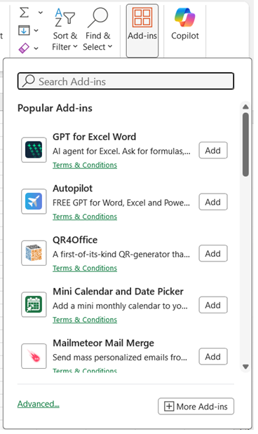
חלונית חנות התוספים אחרי הלחיצה
שלב 2: מחפשים ומוסיפים
בשורת החיפוש כותבים Claude, ובוחרים מהתוצאות את Claude for Microsoft 365.
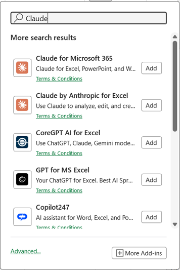
תוצאות החיפוש, והתוסף הנכון מתוכן
שלב 3: הכפתור מופיע בסרגל
אחרי הלחיצה על Add לא נפתח שום חלון נוסף ולא מופיעה שום הודעה. פשוט מופיע כפתור Claude בסרגל העליון, וזה סימן שההתקנה הצליחה.
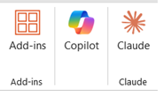
הכפתור של Claude אחרי ההתקנה
שלב 4: נכנסים לחשבון
לוחצים על הכפתור, והסרגל נפתח בצד המסך ומבקש להיכנס לחשבון.
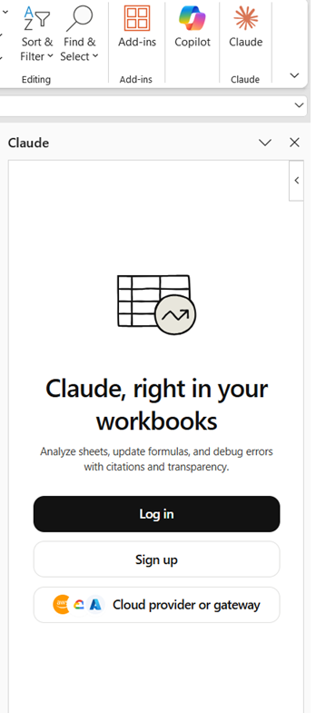
מסך הכניסה בתוך הסרגל
הכניסה נעשית דרך הדפדפן. נפתח עמוד שמבקש לאשר את החיבור בין התוסף לחשבון.
עמוד אישור החיבור שנפתח בדפדפן
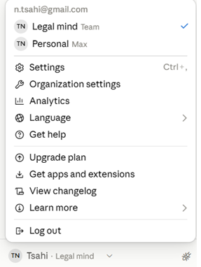
רשימת הארגונים ב-claude.ai, והארגון הפעיל מסומן
אחרי האישור הדפדפן מודיע שההתחברות הצליחה. אפשר לסגור אותו ולחזור ל-Excel, והסרגל מתחבר בעצמו בלי שצריך לרענן או לפתוח מחדש.
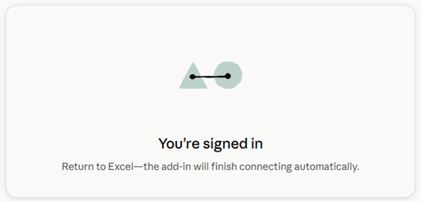
הודעת ההצלחה בדפדפן
שלב 5: מסכי הפתיחה
בפעם הראשונה Claude מציג כמה מסכי פתיחה: מה התפקיד שלכם, באיזה תחום משפטי אתם עוסקים, אזהרה על הוראות מוסתרות בקבצים והצעה לחיבורים חיצוניים.
לא צילמנו את כולם, ואנחנו סומכים עליכם שתחליטו בעצמכם מה לקרוא ומה לדלג. ובכל זאת ההמלצה שלנו היא להקדיש לזה כמה דקות ולסיים את ההתקנה בצורה מסודרת. דווקא בגלל שבתיעוד הרשמי אין שום אמירה שהבחירות האלה משפיעות על התשובות או מתאימות אותן למקצוע שלכם, אין שום סיבה לרוץ.
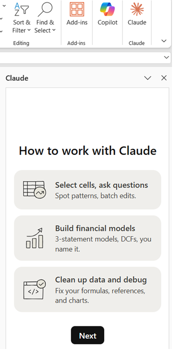
מסך התפקיד, ובו האפשרות Legal
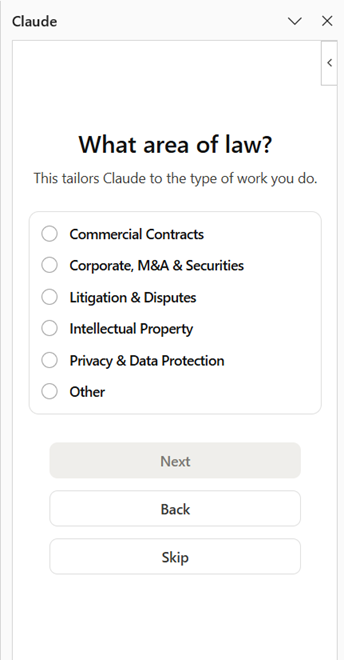
מסך תחום המשפט
לפני הסוף מוצע לחבר חיבורים חיצוניים למסדי נתונים. לוחצים Skip. החיבורים שמוצעים שם הם למסדי נתונים פיננסיים ואין בהם צורך לשום דבר בסדרה הזאת. הנושא הזה אינו נכנס למדריכים האלה, כי הוא נוגע גם בשאלות של סודיות ושל העברת מידע לצדדים שלישיים, ולכן Legal Mind תקדיש לו מדריך נפרד.
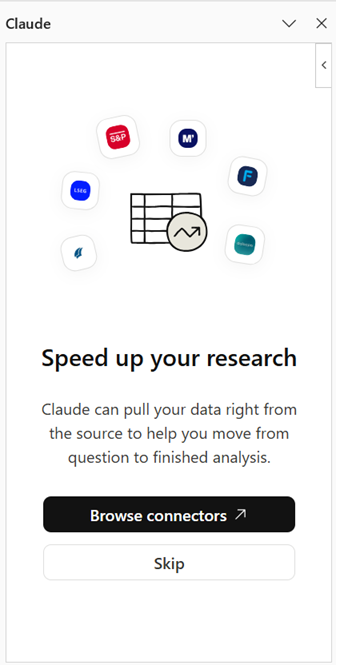
מסך החיבורים החיצוניים, שאפשר לדלג עליו
ודבר אחד שכדאי לזכור מהמסכים האלה: קיצור המקלדת Ctrl + Alt + C פותח את Claude בתוך Excel בלי לחפש את הכפתור בסרגל.
שלב 6: הסרגל מוכן
כשמסכי הפתיחה נגמרים, הסרגל מציג רשימת סקילים מוצעים ושורת כתיבה. מכאן אפשר להתחיל.
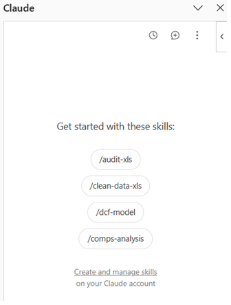
הסרגל אחרי סיום ההתקנה, עם הסקילים המוצעים
מסלול ב', התקנה לכל המשרד
מנהל המשרד יכול להתקין את התוסף פעם אחת לכל העובדים, במקום שכל עורך דין יתקין לעצמו. במקרה כזה התוסף מופיע אצל כולם, וגם מי שאין לו הרשאה להתקין תוספים בעצמו יקבל אותו. זו פעולה של מנהל מערכת, ולא של עורך דין.
הנתיב לפי התיעוד הרשמי הוא זה, ואנחנו עוברים אותו צעד אחר צעד. השלב הראשון הוא לפתוח את הגישה לחנות, והשני הוא להפיץ את התוסף עצמו.
פותחים את הגישה לחנות התוספים
- נכנסים למרכז הניהול של Microsoft 365, בכתובת admin.microsoft.com, עם חשבון שיש לו הרשאות ניהול.
- בתפריט הצד לוחצים על Settings.
- ואז על Org Settings.
- מאפשרים למשתמשים גישה לחנות התוספים, ושומרים.
מפיצים את התוסף
- חוזרים ל-Settings, ונכנסים ל-Integrated apps.
- לוחצים על Add-ins.
- מחפשים Claude for Microsoft 365 ובוחרים אותו.
- בשלב ההפצה בוחרים למי התוסף מגיע. יש ארבע אפשרויות: לכל הארגון, למשתמשים מסוימים, לקבוצות מסוימות, או רק למנהל עצמו. משרד שרוצה להתחיל בפיילוט קטן יבחר קבוצה או משתמשים מסוימים.
- מאשרים את ההפצה.
ודבר אחד שכדאי לדעת מראש כדי לא להיבהל: התוסף אמור להופיע אצל המשתמשים תוך דקות, אבל התיעוד מציין שהפצה מלאה לכל הארגון עשויה לקחת עד 24 שעות. אם הוא לא הופיע מיד אצל כולם, זה לא בהכרח תקלה.
אם ההתקנה נכשלת
זה קורה, וזו לא בהכרח תקלה אצלכם. אלה הסיבות שכדאי לבדוק, לפי הסדר:
- ה-Excel לא מהסוג הנתמך. חוזרים לפרק 4 ובודקים תחת File ואז Account אם מופיע Microsoft 365.
- ה-Excel מחובר לחשבון הלא נכון. אם ה-Office מחובר לחשבון פרטי במקום לחשבון של המשרד, או להיפך, שווה להתנתק ולהתחבר לחשבון הנכון ולנסות שוב. זו סיבה שעולה בפורומים של Microsoft ולא בתיעוד הרשמי, ולכן היא מובאת כאן כדבר שכדאי לבדוק ולא כקביעה.
- הגישה לחנות התוספים חסומה בארגון. במקרה כזה ההתקנה האישית לא תעבוד בכלל, וצריך את מסלול ב'. אם גם שם החנות חסומה, יש מסלול שלישי: מנהל המשרד יכול להוריד קובץ הגדרות של התוסף ולהעלות אותו ידנית במרכז הניהול, בלי לעבור בחנות בכלל. זו פעולה של מנהל מערכת, ולא משהו שעורך דין עושה בעצמו.
- התוסף מותקן אבל לא נפתח. סוגרים את ה-Excel לגמרי ופותחים מחדש.
אם אחרי כל אלה זה עוד לא עובד, זו כבר שאלה למי שמנהל את ה-Microsoft 365 במשרד, ולא משהו שפותרים לבד.
08
הפתיחה הראשונה, ומה Claude רואה בגיליון שלכם
עכשיו נפתח אותו בפעם הראשונה, על גיליון Excel של תרגול ולא על קובץ של תיק אמיתי.
קודם מכינים גיליון תרגול
לוקחים חמש דקות ובונים גיליון קטן שאין בו שום פרט אמיתי של לקוח. פותחים קובץ חדש, ומקלידים ידנית טבלה קטנה, נגיד שמונה שורות, של מעקב שעות פיקטיבי:
- עמודה אחת: שם התיק. אפשר לרשום "תיק א'", "תיק ב'" וכן הלאה.
- עמודה שנייה: תאריך. פזרו את התאריכים על פני שלושה או ארבעה חודשים אחרונים, ולא כולם באותו שבוע. בהמשך הסדרה יש תרגילים שצובעים שורות לפי גיל ובונים גרף לפי חודשים, והם יעבדו רק אם יש פריסה אמיתית.
- עמודה שלישית: מספר שעות.
- עמודה רביעית: תעריף לשעה.
- עמודה חמישית: סכום.
בעמודה החמישית אנחנו רוצים חישוב ולא מספר מוקלד, וזה השלב היחיד בגיליון שדורש נוסחה. אם אינכם יודעים לכתוב נוסחה, זה בדיוק מה לעשות: לוחצים על התא הראשון בעמודה החמישית, בשורה 2, מקלידים בדיוק את זה, כולל סימן השווה בהתחלה, ומקישים Enter:
=C2*D2
עכשיו לוחצים שוב על אותו תא, תופסים את הריבוע הקטן בפינה הימנית התחתונה שלו, וגוררים אותו למטה עד השורה האחרונה. Excel ימשיך את החישוב לכל השורות לבד.
זה כל מה שצריך. על הגיליון הזה נעשה את התרגול הראשון, ואפשר לטעות בו בלי לחשוש.
איך נותנים שם ללשונית
בהמשך הסדרה נבקש כמה פעמים לתת שם ללשונית או להוסיף לשונית חדשה, ולכן שווה לדעת את זה עכשיו. הלשוניות הן הכיתובים הקטנים בתחתית החלון. לשינוי שם: לחיצה כפולה על שם הלשונית, מקלידים את השם החדש ומקישים Enter. להוספת לשונית: לוחצים על סימן הפלוס שמופיע לימין הלשונית האחרונה.
קראו ללשונית הזאת "שעות". זה השם שנשתמש בו בהמשך.
לפתוח את הסרגל
נכנסים ל-Home, ואז Add-ins, ובוחרים את Claude. הוא נפתח כסרגל צר בצד המסך, וה-Excel נשאר במקום. אפשר לעבוד בגיליון והסרגל נשאר פתוח.
הסרגל פתוח בצד המסך, והגיליון נשאר במקומו
מה הוא רואה, ומה לא
לפי התיעוד הרשמי, הוא קורא את תוכן הקובץ שפתוח מולכם: את התאים, את הנוסחאות ואת מבנה הלשוניות. והוא יכול לגשת רק לקובץ שפתוח ב-Excel, כלומר לא לקבצים אחרים במחשב שלכם.
איך שולחים בקשה בסרגל
בסרגל יש תיבת כתיבה. לוחצים בתוכה, ומדביקים או מקלידים את הבקשה. הצילום שלמטה מראה בדיוק איפה היא נמצאת ואיך שולחים, כי זה לא מתואר בתיעוד הרשמי.
הפרומפטים בהמשך הסדרה הם בני כמה שורות, ולכן עדיף להעתיק ולהדביק אותם ולא להקליד. הדבקה שומרת על כל השורות בבת אחת, ולא צריך לדעת איך יורדים שורה בתוך התיבה. אחרי ההדבקה מוודאים בעין שכל השורות הגיעו, ורק אז שולחים.
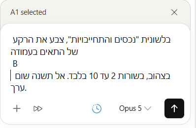
שורת הכתיבה בתחתית הסרגל, עם כפתור השליחה
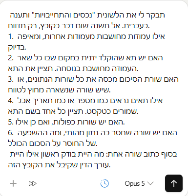
פרומפט בן כמה שורות אחרי הדבקה, לפני השליחה
להפעיל תיעוד של מה שהוא עשה
התיעוד מופעל מתוך ההגדרות של הסרגל, בשני צעדים. שני הצילומים כאן מראים בדיוק איפה נמצא כל אחד מהם, כי מיקום ההגדרות בסרגל אינו מתואר בתיעוד הרשמי ולכן לא נכתב כאן מהניחוש.
- פותחים את ההגדרות של הסרגל.
- בפאנל שנפתח מפעילים את אפשרות התיעוד.
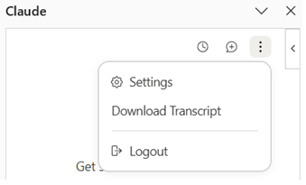
התפריט שנפתח משלוש הנקודות שבראש הסרגל
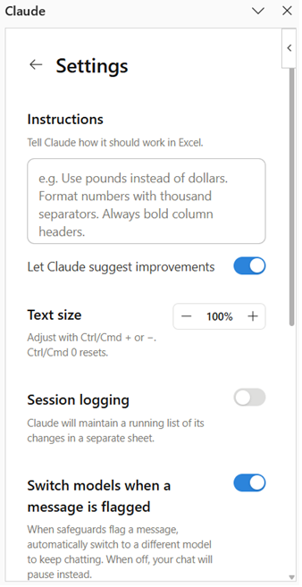
פאנל ההגדרות, ובו שדה ההוראות והמתג Session logging
בהגדרות של הסרגל אפשר להפעיל תיעוד. כשהאפשרות הזאת פעילה, Claude יוצר בקובץ גיליון נוסף בשם Claude Log, וכותב בו את הפעולות שביצע בכל סבב. אם הוא לא יצר אותו לבד, אפשר פשוט לבקש ממנו לתעד את מה שעשה, והוא ייצור את הגיליון.
לעבודה במשרד עורכי דין זה שווה את ההפעלה, כי זה נותן רשומה של מה שנעשה בקובץ ומתי.
גיליון Claude Log שנוצר בקובץ, עם שורת התיעוד הראשונה
נראה לי שנעלמה לי לשונית
כש-Claude יוצר לשוניות חדשות, שורת הלשוניות מתארכת והלשוניות הישנות נדחפות מחוץ למסך. בקובץ בעברית הן נדחפות ימינה, וזה נראה בדיוק כמו לשונית שנמחקה.
אף לשונית לא נמחקה. היא רק לא נראית.
לחיצה ימנית על אחד מחצי הניווט שבקצה שורת הלשוניות פותחת רשימה של כל הלשוניות בקובץ.
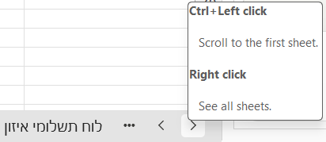
החלונית שנפתחת כשעומדים על חצי הניווט
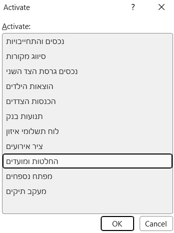
רשימת כל הלשוניות בקובץ
בוחרים לשונית ולוחצים OK, והיא הופכת לפעילה ושורת הלשוניות נגללת אליה. זו גם הדרך הנוחה ביותר לנווט בקובץ עם הרבה לשוניות. Ctrl עם לחיצה שמאלית על החץ קופץ ישר ללשונית הראשונה.
09
איך מנסחים בקשה ל-Claude בתוך גיליון
זה הפרק שקובע אם הכלי יעבוד טוב או בינוני. ניסוח בגיליון Excel שונה מניסוח בשיחה רגילה, ולא כי צריך שפה מיוחדת, אלא כי בגיליון יש מקום מדויק שאליו הבקשה מתייחסת.
ארבעה דברים שכדאי לציין בכל בקשה
- איפה. באיזה גיליון, ובאילו עמודות או תאים. למשל: בגיליון "שעות", בעמודות B ו-C.
- מה. מה בדיוק לעשות. לא "תסדר לי את זה", אלא "תאחד את כל הטלפונים לאותו פורמט".
- איך שהתוצאה תיראה. האם בעמודה חדשה, האם במקום הקיים, האם בגיליון נפרד.
- מה לעשות עם מה שלא ברור. למשל: אם שורה חסרה נתון, תשאיר אותה ריקה ותסמן לי אותה, אל תנחש.
אותה בקשה, בשני ניסוחים
ניסוח חלש: "תסדר לי את רשימת התיקים".
ניסוח טוב: "בגיליון 'תיקים', בעמודה C יש מספרי תיק שנרשמו בכמה צורות שונות. תאחד את כולם לפורמט אחיד. תכתוב את התוצאה בעמודה חדשה לצדה, ואל תשנה את העמודה המקורית. אם בשורה כלשהי לא ברור מה המספר, תשאיר את התא ריק ותסמן לי את השורה."
ההבדל אינו באורך. ההבדל הוא שבניסוח השני אין שום דבר שהוא צריך לנחש, וגם ברור מראש מה יקרה עם המקרים החריגים.
לפעמים הוא ישאל אתכם שאלה
לא תמיד הוא יבצע מיד. לפעמים תופיע בסרגל שאלה עם כמה אפשרויות ללחיצה.
זה קורה כשההוראה שנתתם לא מתאימה בדיוק למבנה של הגיליון Excel שלכם, למשל כשיש בו כמה טבלאות ואתם ביקשתם לעצב "את שורת הכותרות". זה סימן טוב ולא תקלה. הוא בחר לשאול במקום לנחש.
בוחרים אפשרות והוא ממשיך. ואל תלחצו Skip, כי אז הוא מחליט לבדו בדיוק בנקודה שבה הוא עצמו לא היה בטוח.
הבקשה הראשונה שלכם, עכשיו
זה הרגע לעשות את זה בפועל. פותחים את גיליון התרגול שהכנתם בפרק 8, פותחים את הסרגל, מעתיקים את הבקשה הבאה ומדביקים אותה בשורת הכתיבה.
שימו לב למה שביקשנו כאן. אמרנו לו איפה להסתכל, מה בדיוק לענות, ובסוף אמרנו במפורש שלא ישנה כלום. זו בקשה שאין בה שום סיכון, ובכל זאת היא מראה מיד אם הוא באמת מבין את הגיליון שלכם.
בפרק הבא נבדוק את התשובה שקיבלתם.
10
איך בודקים ש-Claude לא טעה
קיבלתם תשובה על הבקשה הראשונה. עכשיו נבדוק אותה, ואת כל מה שיבוא אחריה. יש ארבע דרכים לבדוק, וכדאי להכיר את כולן.
בבקשה הראשונה, שהייתה שאלה בלבד, הבדיקה פשוטה: האם התיאור שהוא נתן לכל עמודה מתאים למה שאתם רואים בגיליון, והאם התא שהוא הצביע עליו הוא באמת התא שבו החישוב יושב. אם שתי התשובות כן, הוא קרא את הגיליון נכון. אם לא, זה סימן שכדאי לנסח מחדש ולציין במפורש את שמות העמודות.
1. הסימון בצבע על מה שהשתנה
אחרי כל שינוי, Claude מסמן את כל התאים שנגע בהם ומוסיף הערות הסבר. זה הדבר הראשון להסתכל עליו: האם השתנו רק התאים שהתכוונתם אליהם, או גם תאים אחרים.
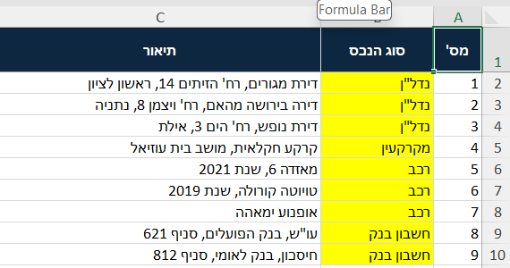
גיליון אחרי שינוי, עם התאים שנצבעו
2. ההפניות לתאים בתוך התשובה
כשהוא מסביר חישוב, ההפניות לתאים בתשובה שלו הן לחיצות. לוחצים, וה-Excel קופץ לאותו תא. זו הדרך המהירה לוודא שהוא מדבר על התא שאתם חושבים.

תשובה בסרגל, וההפניות לתאים בתוכה הן לחיצות
3. גיליון התיעוד
אם הפעלתם את התיעוד בפרק 8, יש בקובץ גיליון Claude Log עם רשימת הפעולות. זה שימושי במיוחד כשעשיתם כמה סבבים ואתם רוצים לראות מה קרה בכל אחד.
4. שמירת השיחה עצמה
בתפריט שלוש הנקודות שבראש הסרגל יש אפשרות בשם Download Transcript, שמורידה את השיחה כולה כקובץ.
ולמה זה חשוב דווקא לעורך דין: לפי התיעוד הרשמי, היסטוריית השיחות נשמרת מקומית בדפדפן ולא בשרתים של Anthropic, והיא אינה מסתנכרנת בין מחשבים. כלומר זו הדרך היחידה לשמור תיעוד של מה ביקשתם ומה הוא ענה.
יומן השינויים מתעד מה נעשה בקובץ. התמליל מתעד מה ביקשתם. מי שעובד על תיק וירצה להסביר בדיעבד איך התקבל מספר, צריך את שניהם.
5. אזהרת הדריסה
אם פעולה עומדת לדרוס נתונים קיימים, הוא מזהיר לפני. כשמופיעה האזהרה הזאת, כדאי לעצור ולקרוא אותה ולא לאשר אוטומטית.
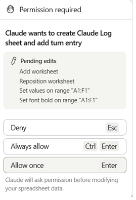
חלון בקשת האישור, עם פירוט כל פעולה בנפרד
ויש חלון אישור אחד שנראה אחרת
רוב בקשות האישור נראות אותו דבר. אבל כשהפעולה עלולה למחוק תוכן, החלון נצבע באדום ומופיעה בו השורה "אובדן נתונים אפשרי", עם הטווח המדויק שעומד להתרוקן.
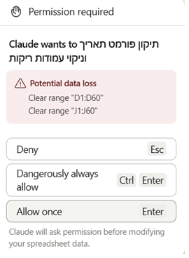
חלון האישור האדום, עם אזהרת אובדן נתונים והטווח שעומד להימחק
ושימו לב לשם הכפתור האמצעי. בחלון הרגיל כתוב עליו Always allow. כאן כתוב Dangerously always allow, כלומר אישור תמידי מסוכן.
Anthropic בחרה לקרוא לכפתור הזה כך בעצמה. אין לנו מה להוסיף על זה.
6. מה הוא אומר שהוא לא בדק
זו אולי הנקודה החשובה ביותר בפרק הזה, והיא לא מובנת מאליה.
בסוף תשובה ארוכה Claude נוהג לכתוב מה בדיוק הוא אימת ומה לא. למשל: "קראתי מחדש את כל טווח הנתונים", או לעומת זאת "לא בדקתי תא-תא את כל 45 השורות, בדקתי מדגמית את שורות 1, 20, 26, 36 ואת שורת הסיכום".
ההבדל בין "בדקתי" לבין "דגמתי" הוא ההבדל בין ממצא לבין רמז.
חפשו את המשפט הזה בכל תשובה. הוא בדרך כלל בפסקה האחרונה, והוא אומר לכם כמה משקל לתת לתשובה שקיבלתם.
ואם משהו יצא לא נכון
ביטול הפעולה ב-Excel עצמו, כלומר Ctrl+Z, עובד גם על שינויים שהוא עשה. לכן, כשמתחילים לעבוד על משהו אמיתי, כדאי לשמור עותק של הקובץ לפני, כדי שתמיד תהיה נקודת חזרה.
11
עבודה על גיליון Excel בעברית, ומה לבדוק בתאריכים
עכשיו שאתם יודעים לבקש ולבדוק, נוסיף שכבה שרלוונטית לכל מי שעובד בעברית.
עברית בגיליון
אפשר לעבוד בעברית לגמרי: לכתוב לו בעברית, ששמות העמודות יהיו בעברית, ושהוא יענה בעברית. שווה לציין בבקשה שהתוצאה תהיה בעברית, כדי שלא יחזיר כותרות באנגלית.
תאריכים, וזו הנקודה שכדאי לשים לב אליה
בישראל כותבים 3/8/2026 ומתכוונים ל-3 באוגוסט. בארצות הברית אותה כתיבה בדיוק אומרת 8 במרץ. אלה חמישה חודשי הפרש על אותן ספרות.
לעורך דין זה לא פרט טכני. תאריך שנקרא לא נכון בגיליון של מועדים הוא ספירת ימים שגויה, והתוצאה תיראה על המסך תקינה לגמרי.
וזה נוגע כמעט לכל תחום, לא רק לליטיגציה: לוח תשלומים בעסקת מכר, תקופות העסקה בתיק דיני עבודה, מועדי טיפול רפואי בתיק נזיקין, תנועות בנק בתיק משפחה ותאריכי חיוב בתיק גבייה. כל אלה גיליונות שכל השורות בהם תלויות בתאריך.
זו לא תכונה של Claude, זו תכונה ותיקה של Excel עצמו. אם התאריך בגיליון הוקלד כתאריך אמיתי, אין בעיה, כי Excel שומר אותו כמספר פנימי שלא משתמע לשתי פנים. הבעיה מתעוררת כשהתאריך בתא הוא סתם טקסט, וזה קורה הרבה במשרדים, כי מעתיקים תאריכים ממייל, ממערכת של בית משפט או מ-PDF, והם נדבקים כטקסט.
הבדיקה, בשורה אחת
אחרי כל בקשה שקשורה לתאריכים, שואלים אותו: "איזה תאריך בדיוק הבנת בתא הזה? תכתוב לי אותו במילים." אם הוא כותב "3 באוגוסט 2026", הכל בסדר. אם הוא כותב "8 במרץ", מצאתם את הפער לפני שהוא נכנס לחישוב.
12
להגדיר את Claude פעם אחת שיעבוד בדרך שלכם
עד כאן ניסחנו כל בקשה מחדש. אבל יש דברים שתרצו שיהיו נכונים תמיד, בכל בקשה, בלי לחזור עליהם. לזה יש שדה הוראות בתוך הסרגל.
שדה ההוראות
בסרגל יש שדה בשם Instructions. מה שכותבים בו חל על כל שיחה ב-Excel, מעכשיו והלאה. כותבים אותו פעם אחת, וזה נשאר.
מסך ההגדרות של התוסף, ובראשו שדה ההוראות
שווה לדעת: ההוראות שכותבים ב-Excel חלות רק על Excel, והן נפרדות מהוראות שהגדרתם ביישומים אחרים של Office.
דוגמה למה שכדאי לכתוב שם
איזה מודל עובד בשבילכם
בתחתית הסרגל, ליד שורת הכתיבה, מופיע שם המודל שעובד כרגע. אפשר ללחוץ עליו ולבחור אחר.
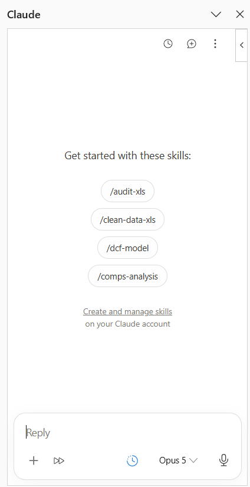
תחתית הסרגל, ובורר המודל לצד שורת הכתיבה
הלחיצה היא על החץ הקטן שלצד שם המודל הנוכחי, ואז נפתחת הרשימה:
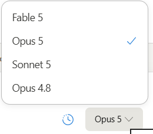
רשימת המודלים שנפתחת מהחץ, והמודל הפעיל מסומן בסימן וי
בבדיקה שלנו הופיעו ארבעה מודלים בלבד, וזהו. אין שם בורר מהירות ואין רמת מאמץ. הבחירה היחידה היא איזה מודל עובד.
שלושה דברים שכדאי לדעת עליו, וכולם מהתיעוד הרשמי.
הרשימה כאן קצרה מזו שב-claude.ai, וזה מכוון. התוסף מציע מבחר מצומצם של מודלים, אלה שעובדים הכי טוב על משימות Office.
הגדרות הארגון שלכם חלות גם כאן. מודל יופיע ברשימה רק אם ההרשאה שלכם בארגון מתירה אותו, ולכן ייתכן שאצל עורך דין אחר במשרד הרשימה תיראה אחרת.
ויש הגדרה שמחליפה מודל לבד. בהגדרות התוסף יש מתג בשם Switch models when a message is flagged, והוא דלוק כברירת מחדל. כשמנגנוני הבטיחות מסמנים הודעה, התוסף עובר אוטומטית למודל אחר וממשיך, במקום לעצור. מי שמעדיף שהשיחה תיעצר במקום שהמודל יתחלף, מכבה אותו.
כלים מוכנים שאפשר להפעיל בלוכסן
אם מקלידים בסרגל את התו /, נפתחת רשימה של כלים מוכנים שנקראים סקילים. הרשימה הזאת ארוכה יותר מארבעת הסקילים שמופיעים במסך הפתיחה, והיא כוללת את כל מה שמותקן בחשבון Claude שלכם.
מבין אלה שמגיעים כברירת מחדל, /audit-xls לביקורת גיליון ו-/clean-data-xls לניקוי נתונים שימושיים לכל אחד. /dcf-model, /comps-analysis ו-/3-statement-model הם כלים פיננסיים לשוק ההון, ואין לעורך דין שימוש בהם.
וסקיל שהותקן בחשבון מופיע כאן גם אם התיאור שלו בעברית. זה מה שמאפשר להוסיף כלים משפטיים משלכם.
שני האחרונים הם כלים פיננסיים ואין לעורך דין שימוש בהם. שני הראשונים דווקא שימושיים.
ולפי התיעוד הרשמי, Claude יכול להפעיל סקיל רלוונטי גם מעצמו, בלי שתקלידו לוכסן, לפי מה שאתם עושים. וסקיל שאינו רלוונטי ליישום שאתם נמצאים בו כלל לא יופיע ברשימה.
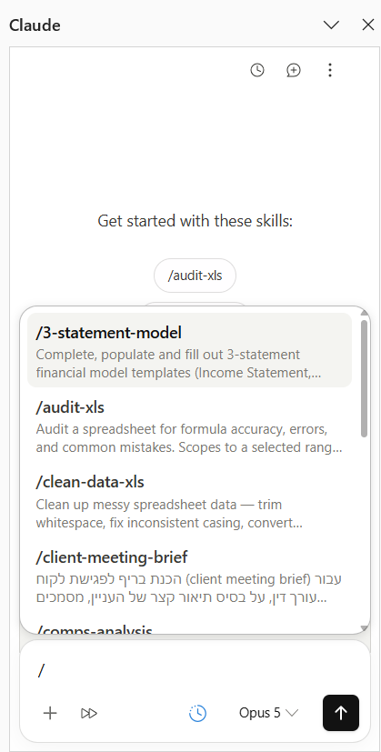
הרשימה שנפתחת אחרי הקלדת לוכסן, ובה כל הסקילים שמותקנים בחשבון
מה שיופיע ברשימה תלוי בכלים שמופעלים בחשבון Claude שלכם, ולכן הרשימה אצלכם לא בהכרח זהה לרשימה אצל עורך דין אחר במשרד. כלים שאינם רלוונטיים ל-Excel לא מופיעים שם כלל. ואם הכלי המתאים לא מופיע, אין בעיה: אפשר לבקש את אותו דבר במילים רגילות.
13
שאלות נפוצות
האם הוא משנה לי את הקובץ בלי שאני יודע?
לא. הוא משנה רק כשביקשתם שינוי, הוא מסמן בצבע כל תא שנגע בו, ומזהיר לפני שהוא דורס נתונים קיימים. אם ביקשתם רק הסבר, הקובץ לא משתנה.
הוא עובד על קובץ ששמור אצלי במחשב, או צריך להעלות אותו לאינטרנט?
הוא עובד על הקובץ שפתוח אצלכם, ואינכם צריכים להעלות אותו לשום מקום בעצמכם. אבל תוכן הגיליון שנדרש לבקשה כן נשלח לענן של Anthropic לצורך העיבוד, וחוזר משם. הפירוט המלא בפרק 6.
אני לא מבין ב-Excel. זה בשבילי?
כן, וזה אפילו אחד השימושים הטובים שלו. אפשר לבקש ממנו להסביר גיליון Excel שמישהו אחר בנה, ואפשר לבקש ממנו לבנות דברים שלא הייתם יודעים לבנות לבד. מה שכן נדרש זה לבדוק את התוצאה, ולזה יש פרק 10.
אפשר לבטל שינוי שהוא עשה?
כן. Ctrl + Z מבטל שינוי שהוא עשה, בדיוק כמו כל שינוי אחר ב-Excel. בדקנו את זה בפועל.
אבל יש שני דברים שכדאי לדעת מראש, אחרת נראה שזה לא עובד.
הראשון: פעולה אחת שביקשתם מתבצעת ב-Excel כמה צעדים נפרדים, ולכן צריך ללחוץ כמה פעמים. אם יומן השינויים דלוק, הלחיצה הראשונה מוחקת דווקא את שורת היומן, והשינוי עצמו עדיין יהיה שם.
והשני: הביטול מקפיץ אתכם ללשונית שבה בוצע השינוי שמתבטל, ולפעמים ללשונית שאין לה קשר למה שעשיתם. זה מבלבל, וזה לא סימן שמשהו נשבר.
אחרי ש-Claude צבע את העמודה
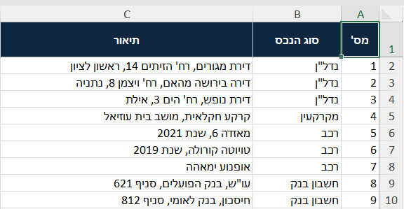
ואחרי הביטול
וההיסטוריה הזאת חיה רק כל עוד הקובץ פתוח. אחרי שמירה וסגירה אין יותר מה לבטל, ולכן בקובץ של תיק עדיין כדאי לעבוד על עותק.
נעלמה לי לשונית מהקובץ, מה קרה?
כמעט בוודאות היא לא נמחקה, אלא נדחפה מחוץ למסך כי נוספו לשוניות חדשות. לחיצה ימנית על אחד מחצי הניווט שבקצה שורת הלשוניות פותחת רשימה של כל הלשוניות בקובץ, ומשם בוחרים אותה. ההסבר המלא עם הצילומים נמצא בפרק 8.
הוא זוכר את הגיליון שעבדנו עליו אתמול?
לא. כל שיחה מתחילה מהקובץ שפתוח כרגע. מה שכן נשמר בין שיחות זה מה שכתבתם בשדה ההוראות, לפי פרק 12.
ההיסטוריה של השיחות שלי נשמרת?
היא נשמרת מקומית אצלכם, לא בשרת. לכן היא לא עוברת בין מחשבים, ואם מנקים את נתוני הדפדפן היא נעלמת.
הוא יכול לחשב לי מועד, למשל מועד להגשה או מועד התיישנות?
הוא יכול לספור ימים בין תאריכים שאתם נותנים לו, וזה בערך זה. הוא לא יודע דין, ולא מכיר את כללי המועדים שחלים על ההליך שלכם. הוא לא מזהה שמועד נדחה בגלל פגרה, ולא מזהה שהספירה מתחילה מיום אחר ממה שהזנתם. הוא עובד על המספרים שבגיליון, ומי שיודע איך סופרים במקרה הזה הוא אתם.
אפשר להזין לו גיליון עם שמות של לקוחות?
זו לא שאלה טכנית אלא שאלה של חיסיון, והיא מוסברת בפרק 6. בקצרה: זה תלוי בסוג החשבון שאתם עובדים בו, במה שהמשרד קבע ובהסכמת הלקוח.
עבדתי איתו שעה על אותה משימה, ופתאום הוא לא זכר משהו מההתחלה. למה?
בשיחות ארוכות המערכת דוחסת אוטומטית את מה שקדם, כדי שהשיחה לא תיתקע. התוצאה היא שפרטים מתחילת העבודה עלולים להיטשטש. בעבודה ארוכה כדאי לחזור ולציין את הפרטים החשובים, במקום להניח שהוא זוכר מה אמרתם לפני חצי שעה.
ההיסטוריה שלי נשמרת בין קבצים שונים?
כן. בתוך Excel ההיסטוריה עוברת בין קבצים שונים, כך שאפשר לחזור לשיחה קודמת גם כשעובדים על קובץ אחר. היא כן נפרדת בין ארגונים, ואם אתם מחליפים חשבון תראו היסטוריה אחרת.
מה עם מאקרו ו-VBA?
אינם נתמכים, וגם טבלאות נתונים אינן נתמכות. במדריך 3 יש פרק על מה לעשות במקום.